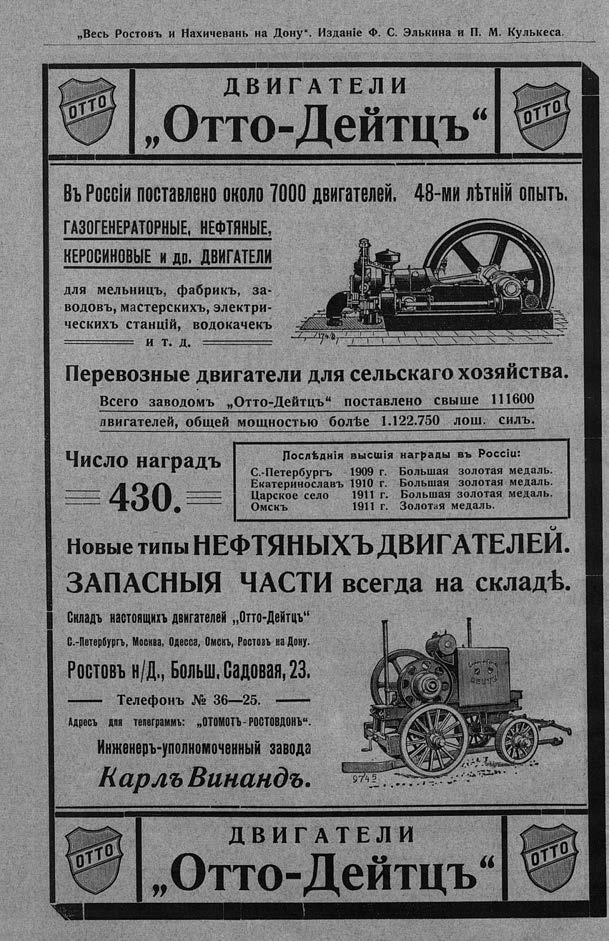

Лист источника 4
Скан

Распознанный текст
„Весь Ростовъ и Нахичевань на Дону“. Изданіе Ф. С. Элькина и П. М. Кулькеса.
OTTO
ДВИГАТЕЛИ
„Отто-Дейтцъ“
OTTO
Въ Россіи поставлено около 7000 двигателей. 48-ми лѣтній опытъ.
ГАЗОГЕНЕРАТОРНЫЕ, НЕФТЯНЫЕ,
КЕРОСИНОВЫЕ и др. ДВИГАТЕЛИ
для мельницъ, фабрикъ, за-
водовъ, мастерскихъ, электри-
ческихъ станцій, водокачекъ
и т. д.
Перевозные двигатели для сельскаго хозяйства.
Всего заводомъ „Отто-Дейтцъ“ поставлено свыше 111600
двигателей, общей мощностью болѣе 1.122.750 лош. силъ.
Число наградъ
430.
Послѣднія высшія награды въ Россіи:
С.-Петербургъ 1909 г. Большая золотая медаль.
Екатеринославъ 1910 г. Большая золотая медаль.
Царское село 1911 г. Большая золотая медаль.
Омскъ 1911 г. Золотая медаль.
Новые типы НЕФТЯНЫХЪ ДВИГАТЕЛЕЙ.
ЗАПАСНЫЯ ЧАСТИ всегда на складѣ.
Складъ настоящихъ двигателей „Отто-Дейтцъ“
С.-Петербургъ, Москва, Одесса, Омскъ, Ростовъ на Дону.
Ростовъ н/Д., Больш. Садовая, 23.
Телефонъ № 36—25.
Адресъ для телеграммъ: „ОТОМОТЪ - РОСТОВДОНЪ“.
Инженеръ-уполномоченный завода
Карлъ Винандъ.
9745
OTTO
ДВИГАТЕЛИ
„Отто-Дейтцъ“
OTTO